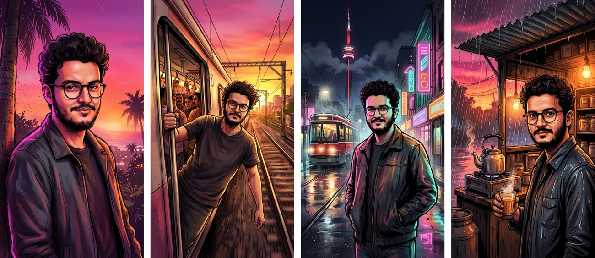
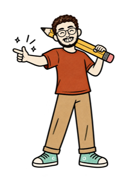
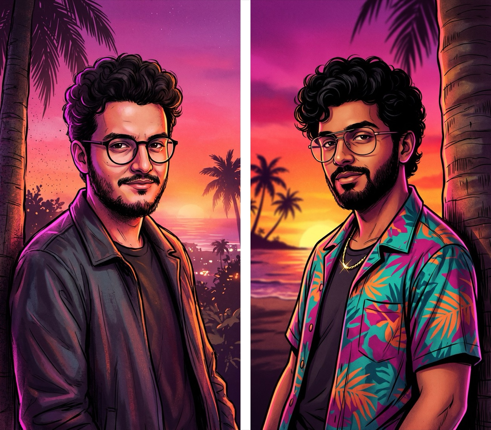

@theabhaychopra
@theabhaychopraWhat you need
- Google Flow (labs.google/fx/tools/flow), signed in with your Google account
- One clear photo of you: face to the camera, good light, nothing covering your face
- Images are made with Nano Banana 2.1, Flow's image model. On my plan each image used 0 credits; check what yours shows before you generate

Flow paints the portraits. The loading bar and the silly tips are added in my edit, not by Flow, so the images come out clean with no text.
Attach your photo

Upload it once
In your Flow project, press + in the prompt box → Upload media and pick your photo.
Attach it to every prompt
Press + again, click your photo, then Add to prompt. A small thumbnail of it sits in the prompt box. Do this before every image, not just the first.
The base portrait prompt
Make one 9:16 image: an airbrushed 1980s crime-game loading-screen portrait of the man in the attached photo. Keep his exact face, glasses, full curly hair, beard, natural face width and skin. Painted illustration with bold ink outlines, half-body, leaning on a palm tree at sunset with a confident smirk, sunset gradient sky from magenta to orange, neon glow, hand-painted airbrush texture. No text, no letters, no logos.
Change "the man" to "the woman" or "the person", and the face line to match you (glasses, hair, beard). "No text, no letters, no logos" keeps fake titles off the art.
Put yourself in your places
Make one 9:16 image in the same airbrushed 1980s crime-game loading-screen style: the man in the attached photo hanging out of the open door of a crowded Mumbai local train at golden hour, one hand on the pole, wind in his hair, tracks and city blurring behind. Keep his exact face, glasses, full curly hair, beard, natural face width and skin. Bold ink outlines, sunset gradient from magenta to orange, hand-painted airbrush texture. No text, no letters, no logos.
Make one 9:16 image in the same airbrushed 1980s crime-game loading-screen style: the man in the attached photo standing in front of a red Toronto streetcar at night on a wet downtown street, hands in the pockets of a dark jacket, neon shop signs glowing pink and teal, the CN Tower lit up far behind. Keep his exact face, glasses, full curly hair, beard, natural face width and skin. Bold ink outlines, hand-painted airbrush texture. No text, no letters, no logos.
Make one 9:16 image in the same airbrushed 1980s crime-game loading-screen style: the man in the attached photo under the tin roof of a roadside chai stall in heavy monsoon rain at dusk, holding a small glass of steaming chai, a kettle on a stove and glowing bulbs behind him, rain streaks lit orange. Keep his exact face, glasses, full curly hair, beard, natural face width and skin. Bold ink outlines, sunset gradient from magenta to orange, hand-painted airbrush texture. No text, no letters, no logos.
Your own place
Make one 9:16 image in the same airbrushed 1980s crime-game loading-screen style: the man in the attached photo [doing what] at [your place] at [time of day], [two details that make it yours]. Keep his exact face, glasses, full curly hair, beard, natural face width and skin. Bold ink outlines, sunset gradient from magenta to orange, hand-painted airbrush texture. No text, no letters, no logos.
- A place only you would pick beats a generic one: your street, your bus, your café
- Two small details (a kettle, a streetcar, the rain) make it read as a real place
- Time of day sets the colours: golden hour and night with neon look the most like a loading screen
The trick: your photo, every time

With my photo attached, Flow kept my face even when I took the face line out. With no photo, describing myself got a stranger. Keep the face line anyway: it's the photo that does most of the work.
- Google Flowlabs.google
Original AI art inspired by the GTA 6 launch. Not affiliated with Rockstar Games. Every image here is AI-made from my own photo.

Your loading screen is ready
Every prompt here is the one I ran for the reel, word for word.